Carolyn Yu
Overview
Public transport is vital to
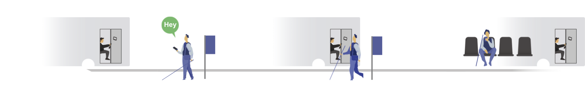
Role
I worked as an
Collaborators
- App Group - UI Designer: Yi Lee
- Bus Waiting Area Group: Wei-An Hsieh, Shao-Yu Lee
- Bus Telematics System Group: I-Hui Yeh, Gang Ku Lin
- Advisor: Neng-Hao Yu, Hsien-Hui Tang, and Yung-Ju Chang
Method & Tools
- Method: Competitive analysis, Persona, Agile, Wireframing, Prototyping, User testing, Wizard of Oz
- Tools: Sketch, Adobe XD, Swift (IDE: Xcode)
Design Process
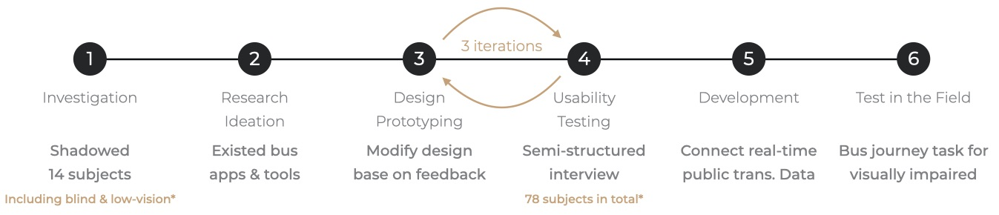
Challenges
We recruited 14 visually impaired participants to investigate user behavior by followed behind their whole bus riding journey. After analyzing the field notes and the interview transcripts with affinity diagramming, we classified the bus journey into the following stages:
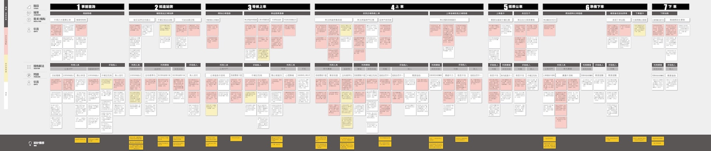
Work Affinity Activity DiagramThen, we integrated and illustrated the needs of visually impaired travelers in each stage of a bus journey into the following figure:
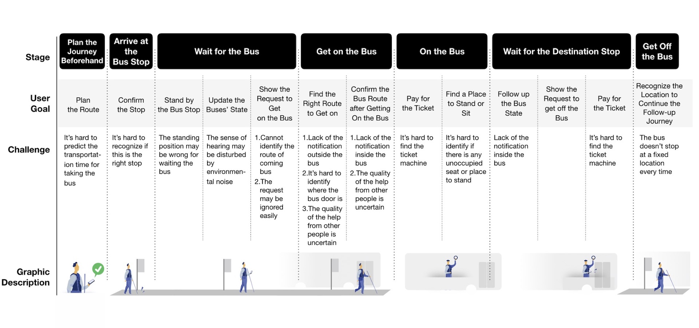
Problem Statement
To solve the various needs, some applications and systems have been developed in the past. However, most of the previous studies involve the use of novel techniques that could be costly to implement, which may be prohibitive for a real city to adopt. Therefore, our aim is to implement a bus service in Taipei city that guides the users through the entire journey. To ensure that our implementation is feasible and affordable, we decided to build our service on the basis of the existing infrastructure and smartphones to save cost. We expect this service to reduce the overall burden on the visually impaired when taking public transportation, helping them regain autonomy in movement and become more independent.
Ideation
According to the journey map above, we found that the entire service of the visually impaired traveling by bus can be divided into three parts, and only when all three parts are taken into consideration can the whole experience be connected. We summarize the design points for the three parts:
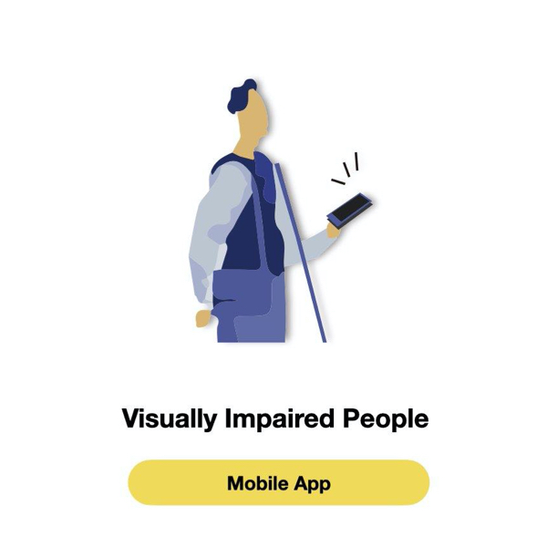
The visually impairedWe think a mobile phone reservation service is a good solution because most of the visually impaired people are using a mobile phone, and it is simple for them to request a reservation by their phone instead of raising hand to stop the bus.
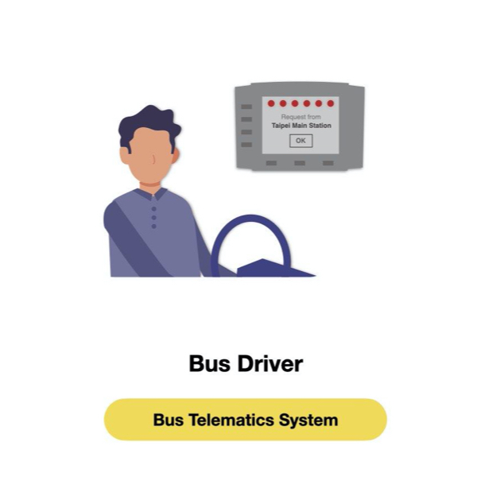
The bus driverWe think up a solution for the bus drivers that enables them to know whether there is any visually impaired person waiting for the bus, while not requiring too much attention and pressure to the driver.
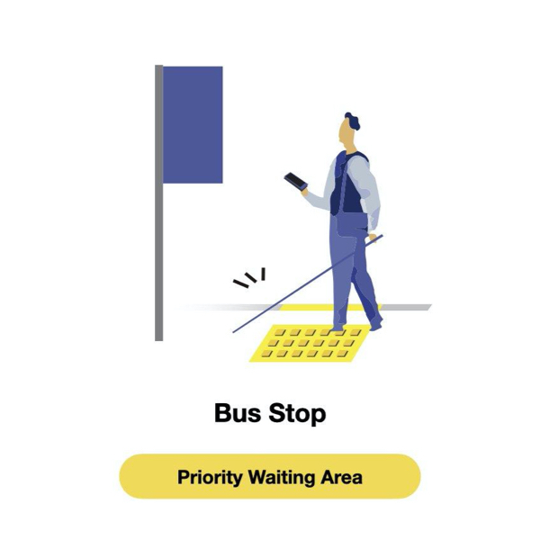
The bus stopThe waiting area for the visually impaired should be easily found with the white cane. It should also be easily noticed by the bus driver so that they can identify any visually impaired people waiting for the bus.
Our solution (for App group)
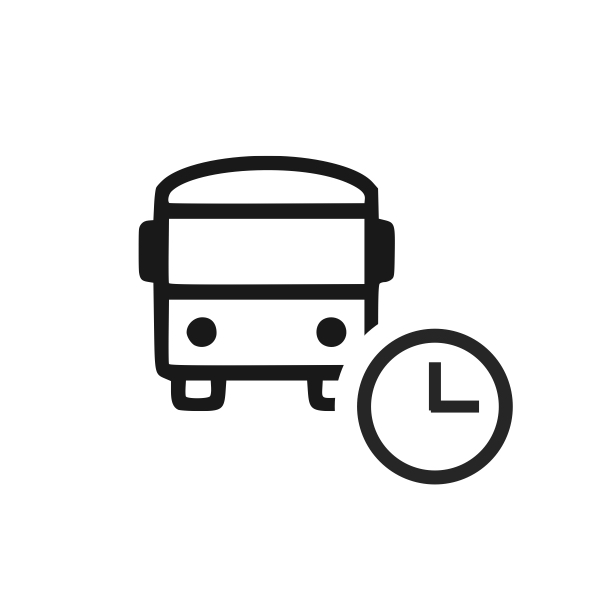
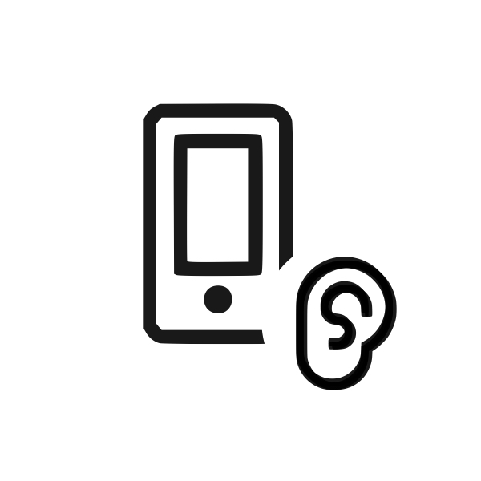
Storyboard
The user flow of EyeBus is shown and described below:
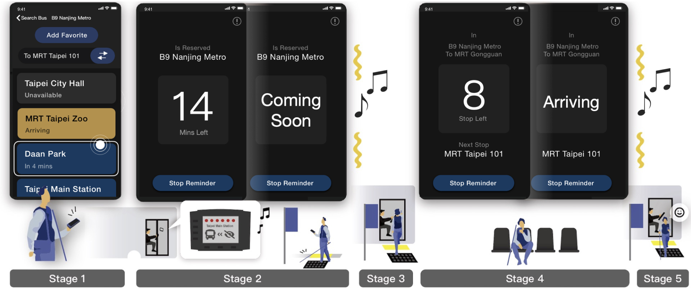
Stage 1: Finding the Right Bus
Use the app to find your bus. We've made it easier for the visually impaired by showing direct routes or same-stop transfers. No need to wave down the bus; you can reserve your ride.
Stage 2: Ready to Board
The app tells you when your bus is coming. Follow our indicators to the waiting area, and the driver will know you're boarding. The bus stops right in front of you.
Stage 3: Onboard
Click "Already Onboard" in the app. It reminds you when to get off.
Stage 4: Smooth Ride
The app shows remaining stops and the next one. It vibrates when your stop is near.
Stage 5: Arrival
The driver drops you off at your destination. You can catch another bus if needed.
Design & Prototyping
As I am the UX designer of the App group, the following context will only focus on the App design.
To help people who do not know how people with visual impairments use a smartphone, I introduce the basic usage as follows. The iOS user can turn on the screen reader feature "VoiceOver" of "Accessibility" in "Settings" (called "Talkback" in Android). As VoiceOver is turned on, the smartphone will display a black/white box on the screen, and then the phone can only be controlled by gestures. The 3 basic gestures are: 1) select through relative position by swipe left or right, 2) select through absolute position by spatial position, 3) double-click to confirm.
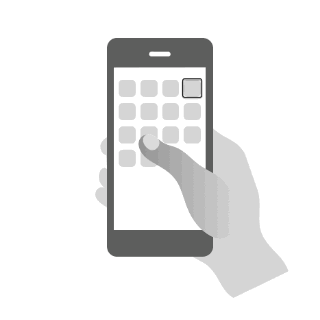
Swipe left or right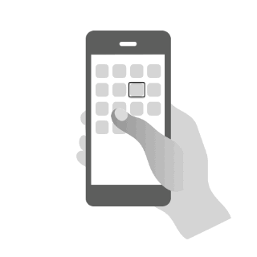
Spatial position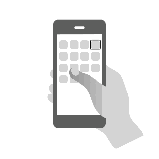
Double-clickDue to this user behavior, I chose to use a linear layout for the whole app interface composition.
Iteration: Prototype I
Purpose
To verify the feasibility of bus reservation feature in Auditory User Interface. We conducted a field test through Wizard of Oz studies with 4 blind participants. To simulate a realistic experience, I developed a native iOS app as a prototype, and mocked the real-time bus information through a control panel app.
Process
Obtained participant's informed consent (IRB) → indoor tutorial → outdoor task → indoor semi-structured interview
Verify
The result showed that our service flow could guide the visually impaired users to board on their desired bus and alight at the destination successfully.
Problems
The availability of contextual spatial information in the Auditory User Interface and the timing of the notification still need to improve.
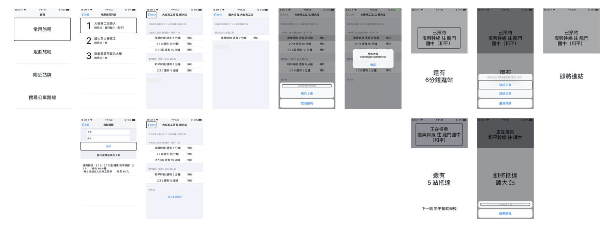
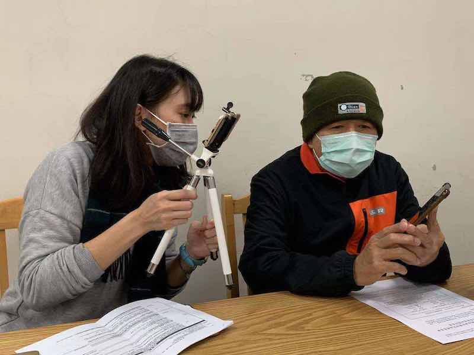
Indoor tutorial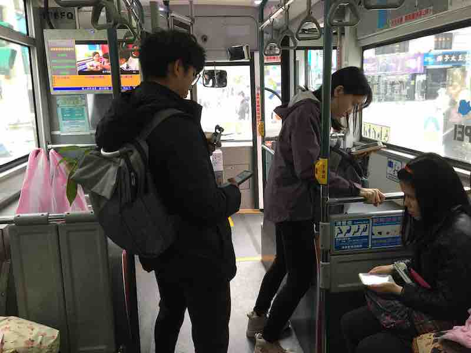
Outdoor task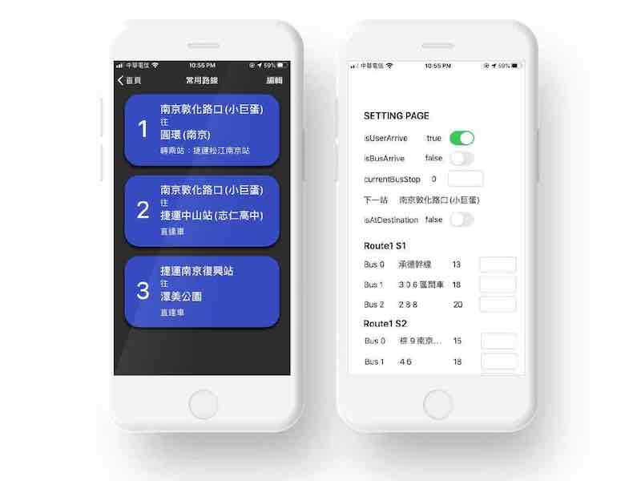
Prototype & Control Panel appIteration: Prototype II
Purpose
In addition to verify the usability on Graphical User Interface, we recruited 14 people with low-vision and 15 blind participants to evaluate our app design.
Process
Obtained participant's informed consent (IRB) → indoor tutorial → indoor task → indoor semi-structured interview
Verify
The results show that our design can help both blind and low-vision users obtain the information effectively.
Problems
However, 7 low-vision participants reported that black-on-white text is more comfortable than white-on-black in reading. Therefore, the yellow-on-black ticket graph and the palette we used would be redesigned in the next iteration.
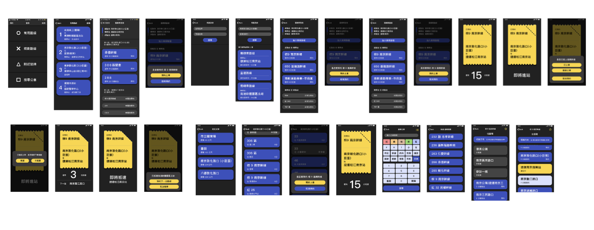
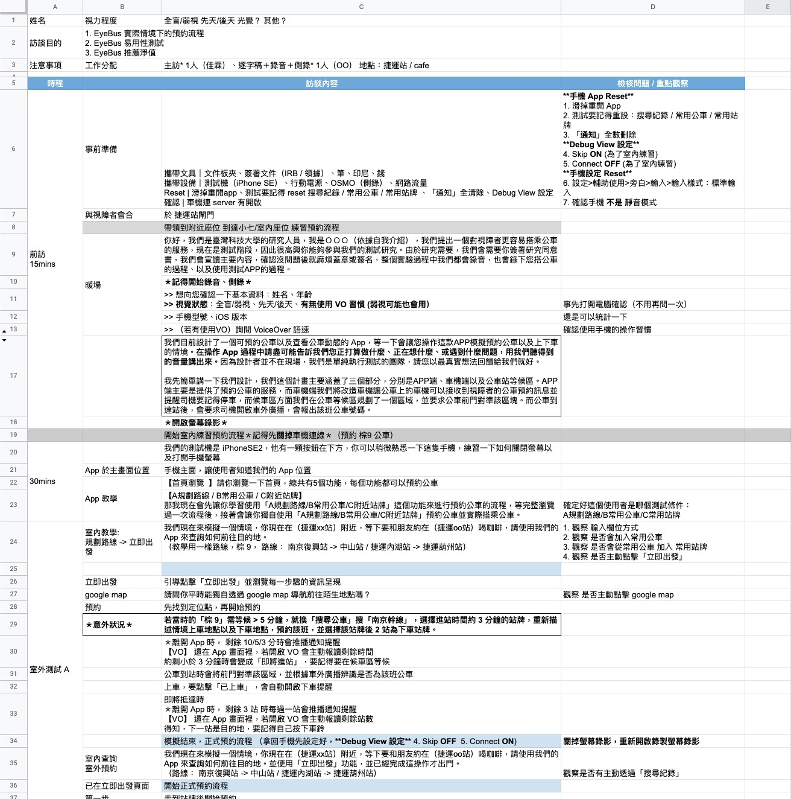
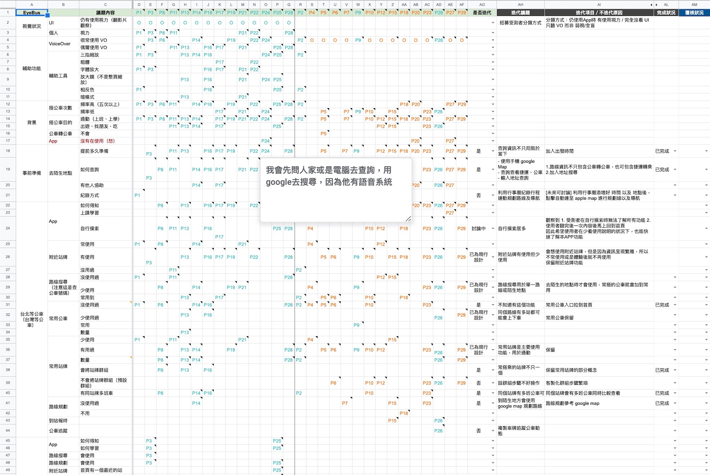
The outline of the interview and the organized feedback records of each participant.
Final Design
In this version, we adjusted the palette and choose these 3 pairs of background & text colors: #123A61 & #FFFFFF, #B88F42 & #000000, #212121 & #FFFFFF, and focused on the availability of contextual spatial information in the Auditory User Interface to improve the usability of the EyeBus app.
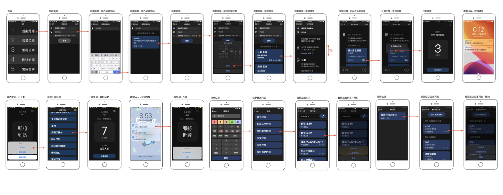
The snapshots of EyeBus appInformation Architecture
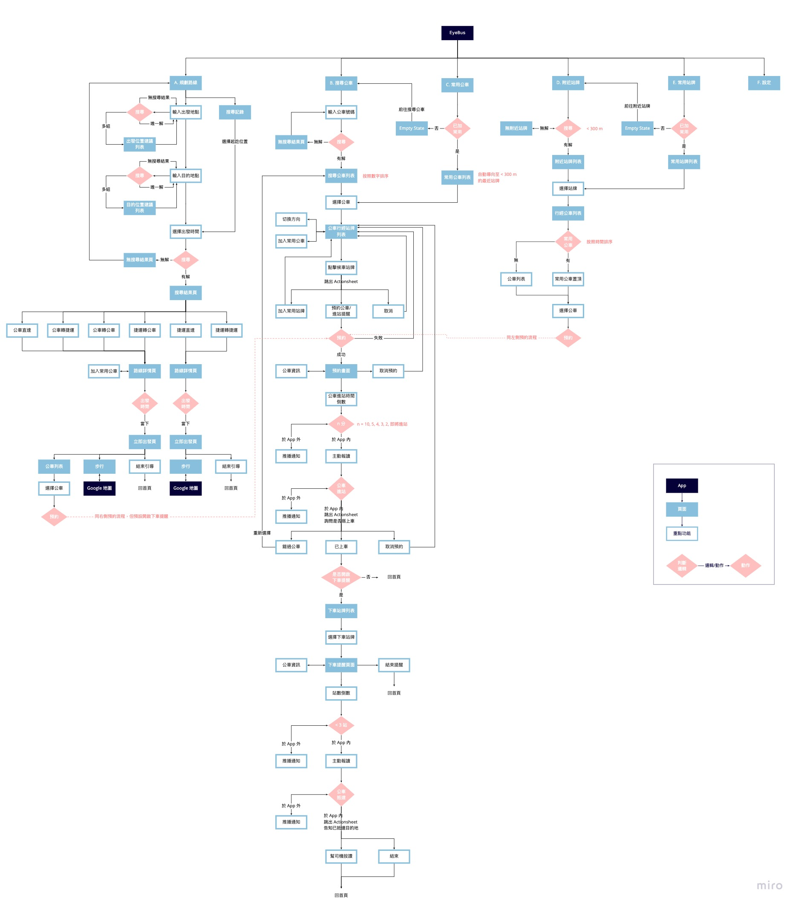
Development
To verify the feasibility of the whole EyeBus service in the field, we developed an iOS EyeBus app connected with bus telematics system server, paved the tactile indicators at 3 different types of bus stops, and updated 34 bus telematics system devices (for all Nanjing Route Buses) which are already installed at every bus in Taiwan with minimal notification for bus drivers.
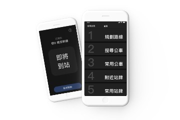
EyeBus iOS App provides bus reservation service for the visually impaired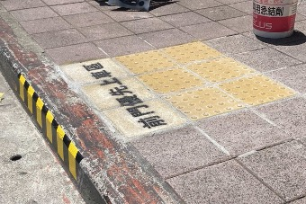
Paved tactile indicators located bus stop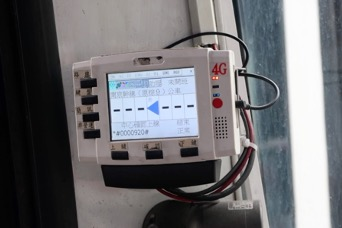
Updated bus telematics system devices with minimal notification for bus drivers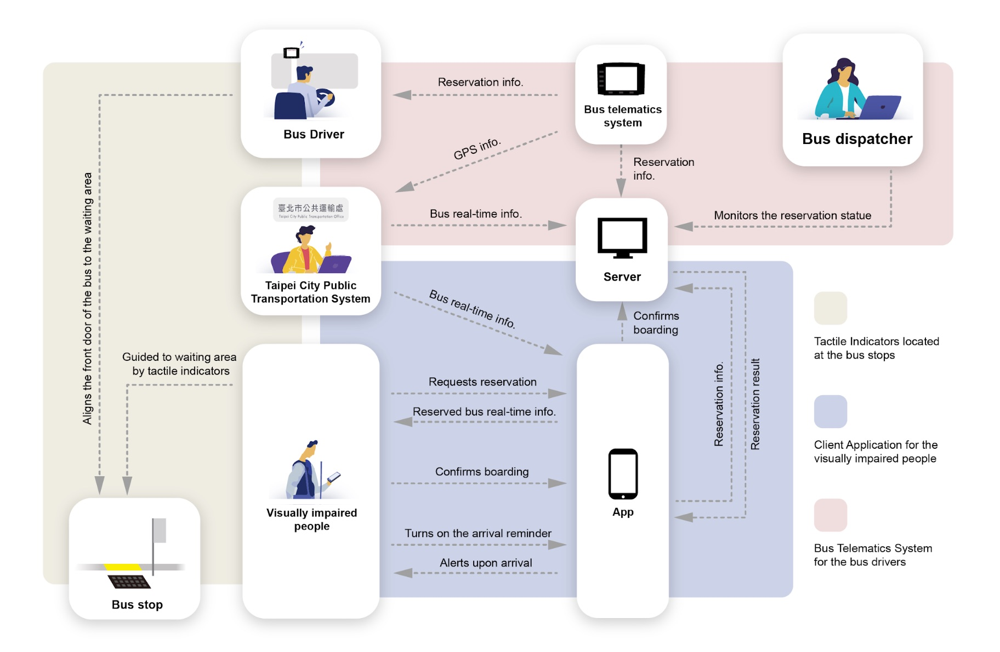
Information flow of the EyeBus serviceTest in the Field
In this phase, we recruited 11 people with low-vision and 19 blind participants test in the field.
Process
- Meet with the participant
- Obtain participant's informed consent (IRB)
- Outdoor tutorial
- Indoor tutorial
- Start the bus taking task outdoor without assist
- Task: Arrive the waiting area → Reservate a requested bus → on board → arrive at the requested stop
- Indoor semi-structured interview
Demo Video: A Full process of EyeBus Field Test
Evaluation
We observed each participant's interaction with the EyeBus app during the whole bus riding task. We recorded the action count on each page and whether the task was successful in each stage, and we collected the qualitative data during the semi-structured interview and the quantitative data with the SUS and NPS questionaries.
Tasks
- "Let's simulate a situation. You are near the A bus stop, and you have made an appointment with a friend for coffee at the B bus stop. Please use our App to help you get to your destination."
- "Let's simulate a situation. You know that the 'Nanjing Main Route' is a bus that you take to work every day. Please try to use 'Search Bus' feature to add 'Nanjing Main Route' to the favorite bus, and use our app to help you get to your workplace."
- "Let's simulate a situation. You know that you have to wait at the nearby A bus stop, and you know that the stop sign 'Nanjing Main Route' is a bus you can take. Please press 'Nearby' to tell us about the arrival time, and use our app to help you get to the B bus stop."
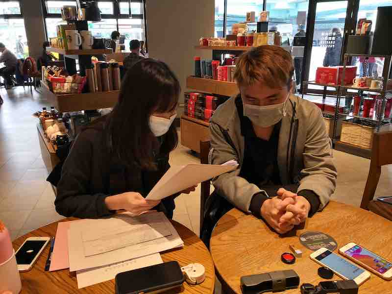
Obtained participant's informed consent (IRB)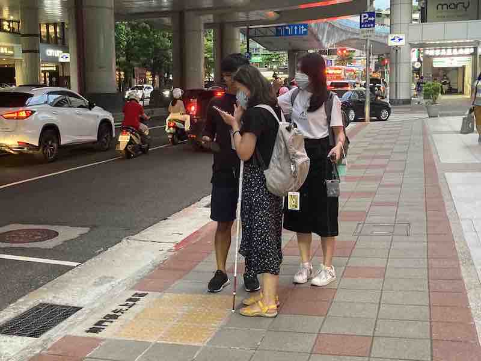
Outdoor Task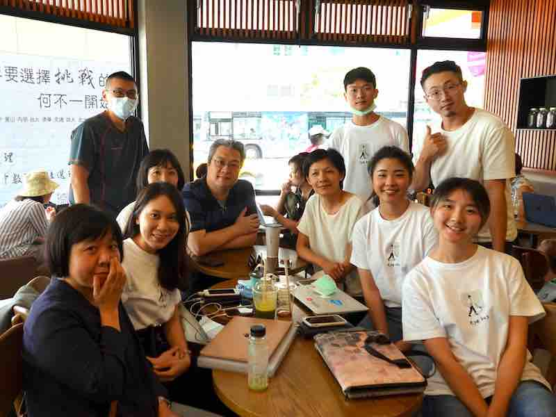
Test observed by government officialsResult
All 30 participants successfully arrived at the requested stop with the assist of the EyeBus app. We received a high average score of
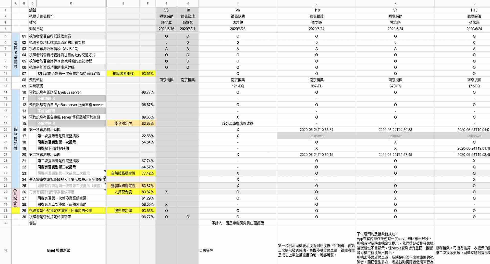
The record form of each stage of the task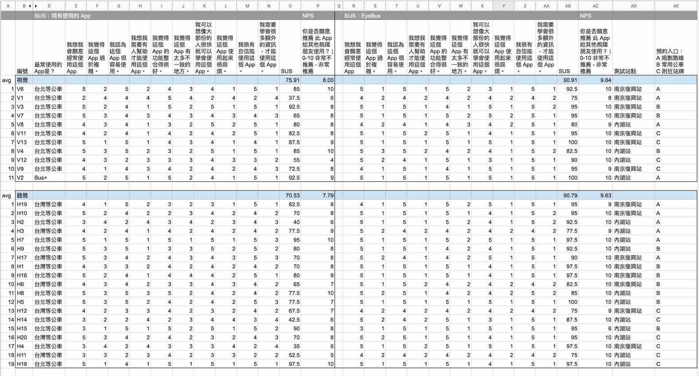
SUS & NPS recordMy Contributions
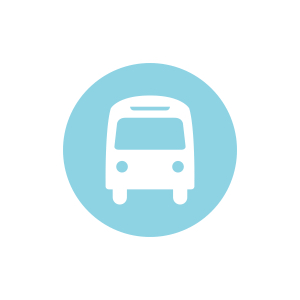
Implemented and Tested Bus Reservation Feature and Process
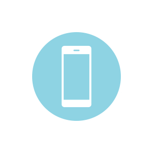
Improved other Basic Features' Usability of Bus App
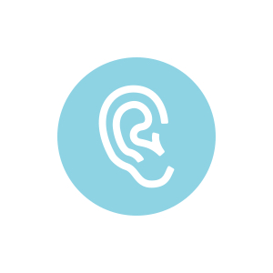
Proposed Auditory User Interface Principles
Extra Contributions
Mobile App Design principle
I generalized our design principals separately for Auditory UI and Graphical UI as shown in the following section.
Auditory UI for the blind
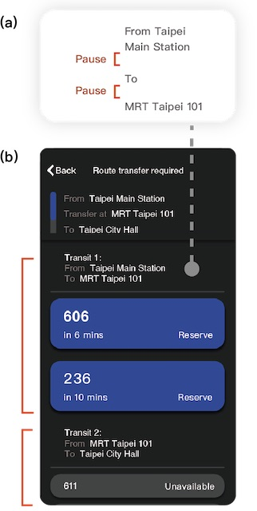
Graphical UI for low-vision people
For all main information blocks, we picked several pairs of high-contrast colors, as shown in Figure 4, that were given the highest rating (level AAA) in the Web Content Accessibility Guidelines. Furthermore, we used a card design that laid out UI elements in a linear listing, with high-contrast colors to create a call-to-action button for the low-vision users.
Publication
BusMyFriend: Designing a Bus Reservation Service for People with Visual Impairments in Taipei City
In Proceedings of
*please notice the design is around at 2nd iteration, not the final version.
Exhibition
Design For Taiwan 4th Social Design Exhibition. Sep, 2020 | [web]
Talk
The design principle of the EyeBus App | [Video] (Language: Chinese)
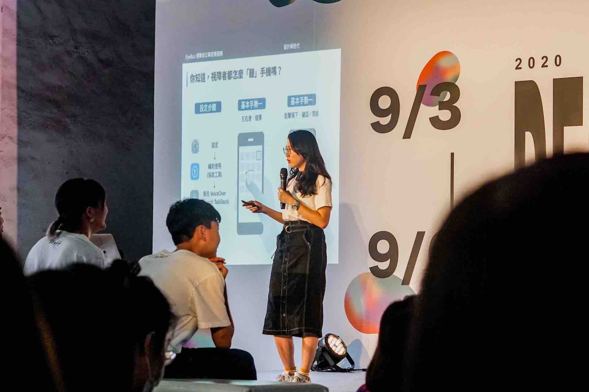
Me giving a talk on App Design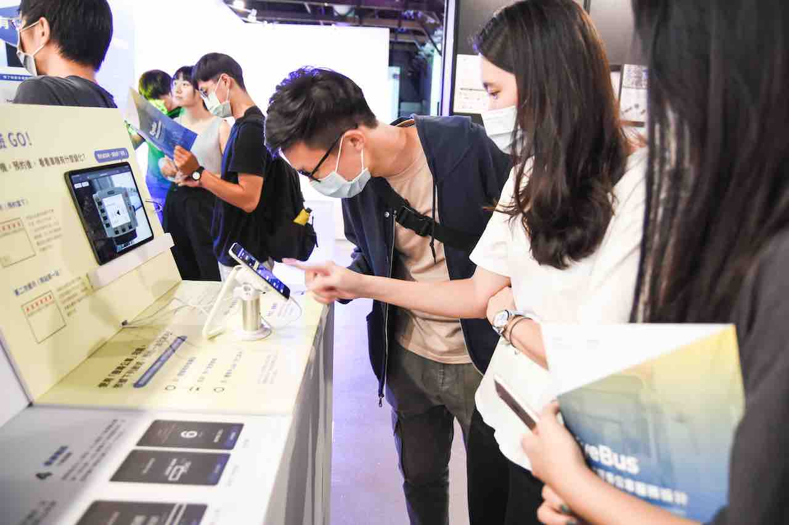
Me explaining EyeBus service design in the exhibition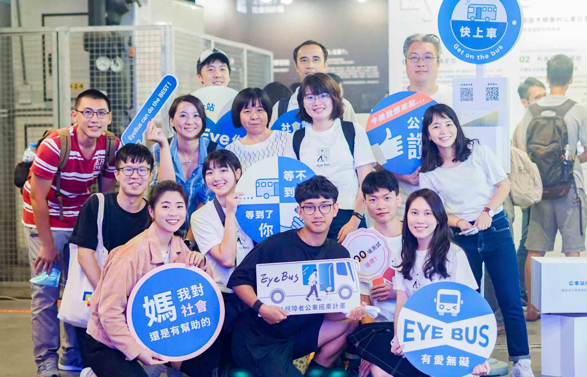
EyeBus team photo (with gov officials)